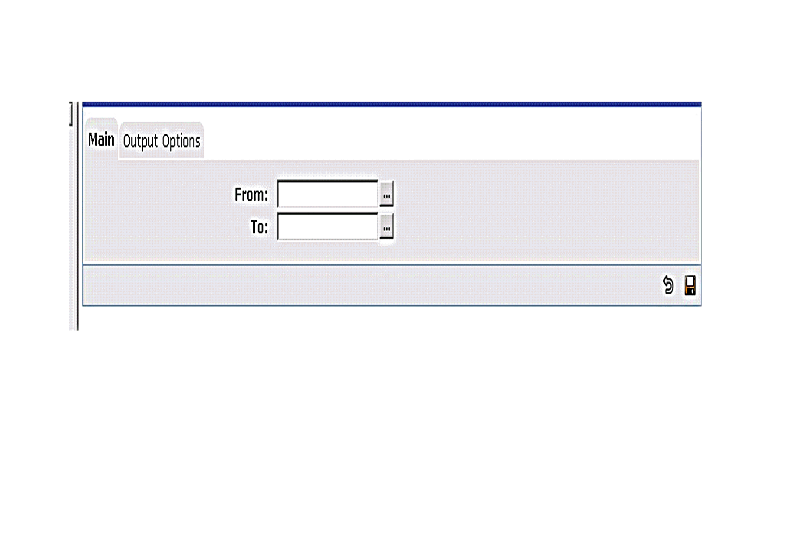
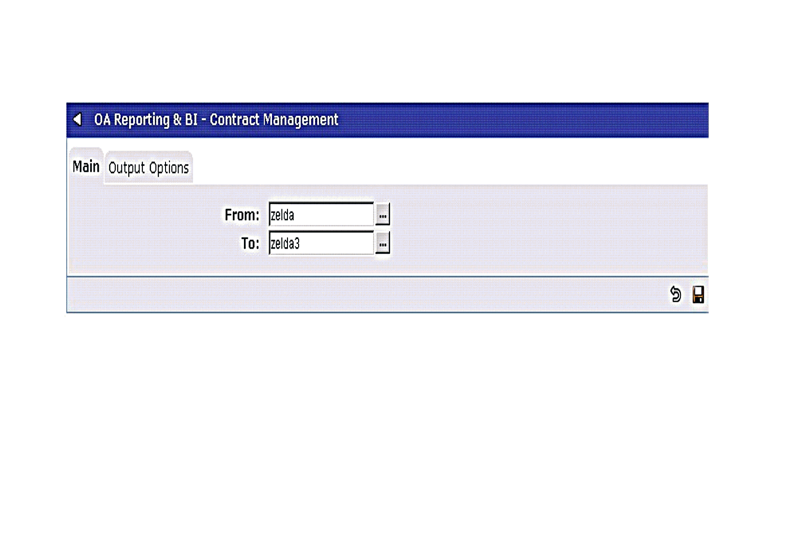
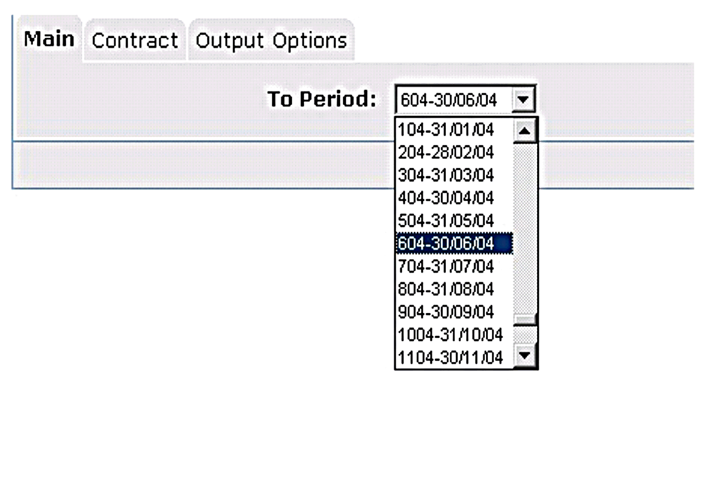
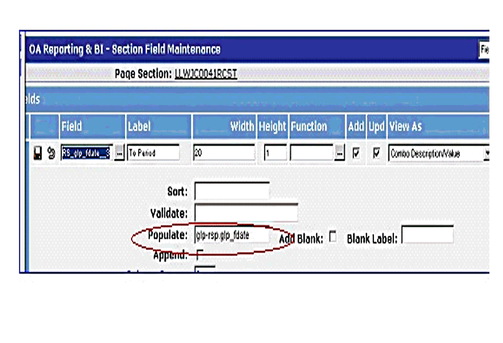
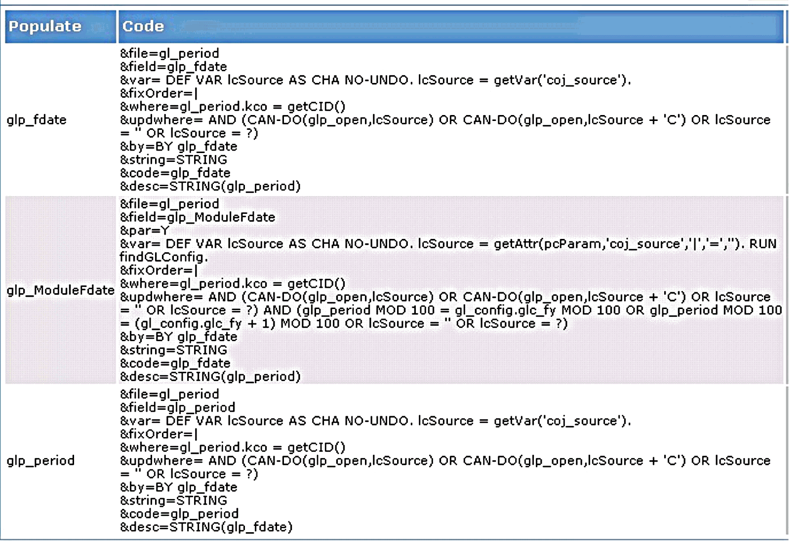

"RS_" stands for "Report Selection", and by adding this prefix (and a selection type suffix) to a field you can create a field that can be used as part of the selection criteria on your report by directly affecting the query or parameter driven fields.

The RS_ Fields are specified on the "Update" Field portion of the Page Section for the report you are using. You do this by adding the RS_ prefix and selection type suffixes ("FROM" = __1 , "TO" = __2 and "MATCHES" = __3) to the field you intend to use for selection.
Example:
If you were to filter for "Matches" on the "job_num" you should do the following:
RS_job_num__3
For filtering the same field on a "FROM - TO" basis you should use:
RS_job_num__1 and RS_job_num__2
You then reference these RS_fields on the selection criteria of your report query, when doing this the program will replace the \

If at runtime the user enters:
The Query
FOR EACH jc_job
WHERE jc_job.kco = \
AND (jc_job.job_num >= '\
OR '\
AND (jc_job.job_num <= '\
OR '\
Would be Transformed to:
FOR EACH jc_job
WHERE jc_job.kco = \
AND jc_job.job_num >= 'zelda'
AND (jc_job.job_num <= 'zelda3'
The RS_ fields can also be used to filter on date fields*, by specifying the DATE function on a query. Example:
FOR EACH pp_organisation
WHERE TRUE \
AND (ppo_start_date >= DATE('\
OR '\
*This will work on all date fields, however only some FSPs will provide Date format validation on entry.
Some of the RS_ fields can have lookups and these lookups can be populated by the system.

You do this by using "populates" on the RS_ field configuration screen of the page section of your report.

You can find the "populates" available to each table on the Database

Call the "populates" by using an "RSPName.populate" format